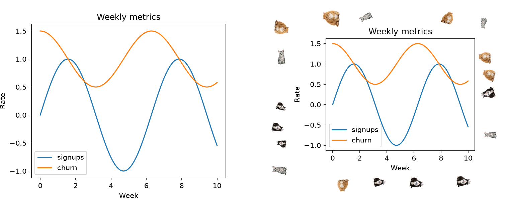
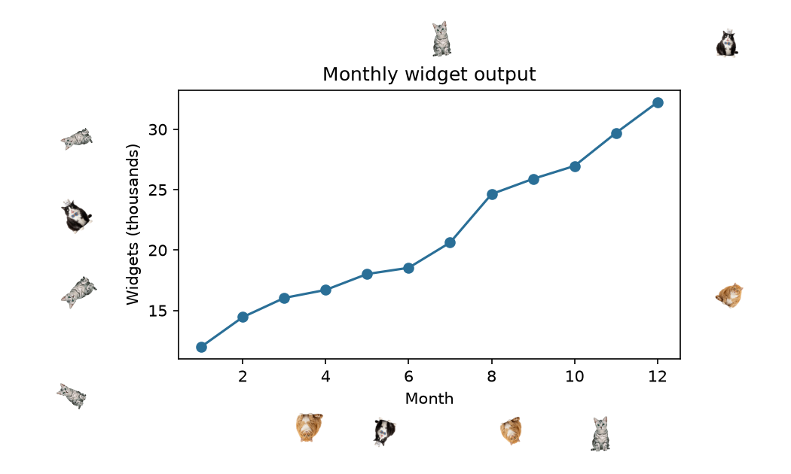
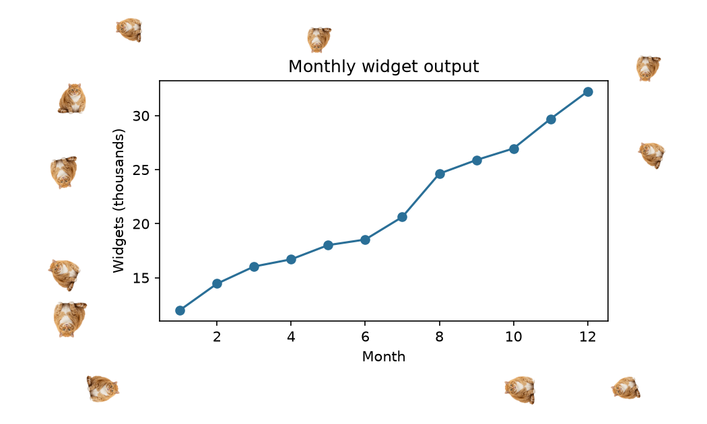
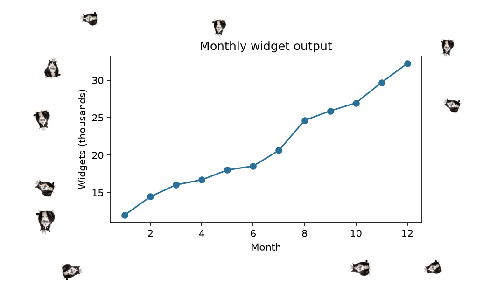
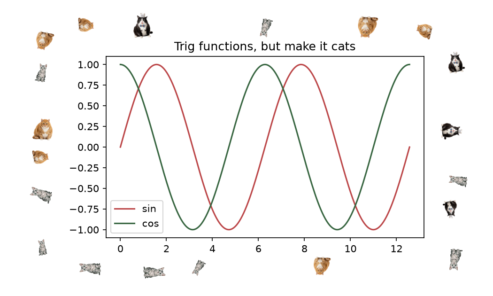
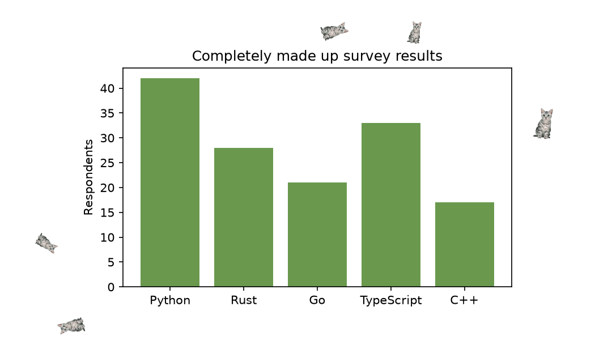

meowplotlib: Cats on Your Charts
I published a Python package that puts cats on your matplotlib charts. You install it, you import it, and from that point on every figure you show or save has cats sitting around the edges of it. That's the whole pitch.
pip install meowplotlibimport matplotlib.pyplot as plt
import meowplotlib # that's it, you're done
plt.plot(x, y, marker="o")
plt.savefig("chart.png")
It was supposed to be called catplotlib, which is obviously the better name, but someone got to it on PyPI first. Meowplotlib it is.
The one rule the library holds itself to is that the cats never sit on your data. Before placing anything, it extracts bounding boxes for everything that matters on the figure: the axes, titles, tick labels, legends. Cats only get placed in the space that's left over, and they don't overlap each other either. Placement is random but seedable, so if you need the same layout twice, set_seed gives you that. Your chart is still your chart; it just has company now.

There's a small API for the people who want opinions. Three art styles ship in v1: classic, derp, and chonk. They do what they say.
import meowplotlib
meowplotlib.set_style("chonk")
meowplotlib.set_seed(11)

Density has three tiers. sparse is for people who want plausible deniability, and chaotic is for people who have accepted who they are.
meowplotlib.set_style("mix")
meowplotlib.set_density("chaotic")
fig, ax = plt.subplots()
ax.plot(x, np.sin(x), label="sin")
ax.plot(x, np.cos(x), label="cos")
ax.legend(loc="lower left")

And because at some point you will need to put a chart in front of someone who signs paychecks, there's an off switch, plus a context manager for turning it off for exactly one figure:
with meowplotlib.config(enabled=False):
plt.savefig("quarterly_report.png") # no cats, cowardA couple of engineering notes for anyone curious what's underneath. The placement engine is pure geometry, kept in a core package that has no matplotlib import at all; matplotlib knowledge lives in a separate rendering layer that hooks draw and savefig. That split, along with mypy strict mode and a pile of property-based tests on the collision math, is most of why the project stayed pleasant to work on. Adding a new art style requires no code at all: drop PNGs in a folder, add one entry to a TOML manifest.
The honest confessions. First, the placement layer calls figure._get_renderer(), which is a private matplotlib API. It's the same pattern matplotlib's own layout engine uses internally, so it's about as stable as a private API gets, but a future matplotlib release could still break it. Second, the library quietly resizes your plot area a little. Early versions didn't, and the cats only ever showed up on the top and right of the figure, because it turns out matplotlib's default layout leaves about 2% of margin at the bottom and barely more on the left. There is no room for a cat there. So meowplotlib guarantees itself a perimeter of clear space before placing anything, which means your axes shrink by a few percent. I went back and forth on whether that violated the don't-touch-your-chart principle and decided a slightly smaller plot with cats on all four sides was the product people actually want.
The code is on GitHub and the package is on PyPI. Next up is probably a frame mode, where a cat face becomes the border of the figure instead of individuals scattered around it. If you find a bug, or a cat sits somewhere it shouldn't, file an issue. Screenshots mandatory, for obvious reasons.